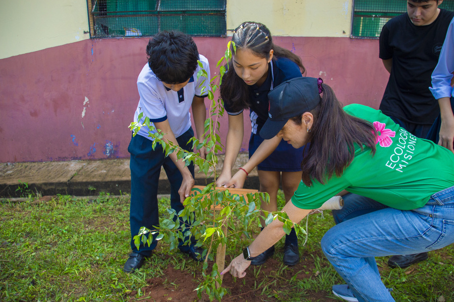
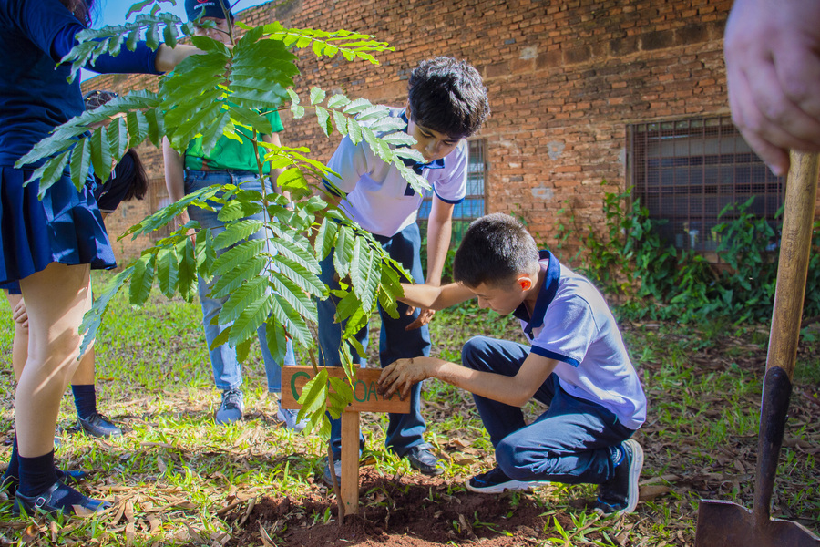
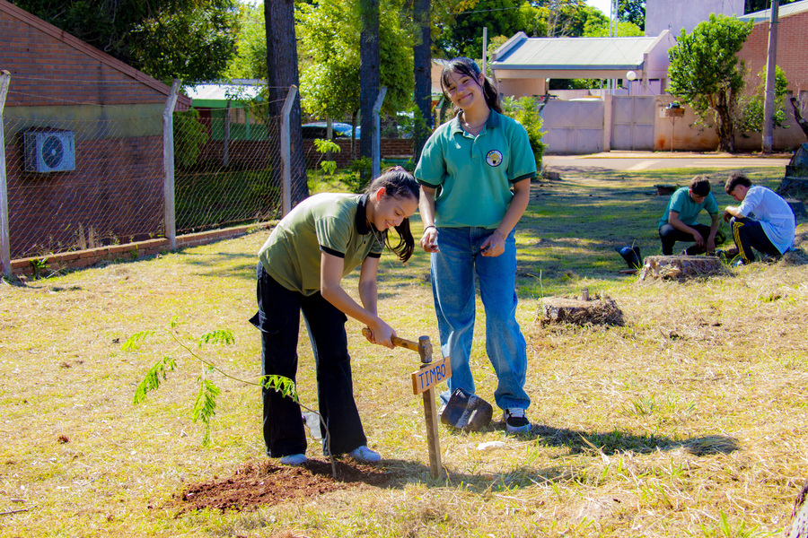

Una campaña para plantar especies nativas en las escuelas de Misiones



En el marco del Día Mundial del Medio Ambiente, la Dirección de Control Forestal del Ministerio de Ecología de Misiones impulsa "Adoptá un árbol": una acción de plantación participativa en escuelas de la provincia.
Cada institución recibe un kit completo con todo lo necesario para plantar una especie nativa en su espacio verde, junto con materiales educativos que acompañan el proceso.
Regar frecuentemente durante los primeros meses. Evitar el exceso de agua para no ahogar las raíces.
Retirar malezas alrededor del plantín. Controlar hormigas y otras plagas. Revisar periódicamente el estado sanitario del árbol.
Evitar daños mecánicos. Proteger de heladas intensas y del pisoteo en los primeros meses de crecimiento.
Todas las especies seleccionadas son nativas de la región y están adaptadas al clima de Misiones.
Mapa interactivo con todas las instituciones que reciben el kit de plantación en esta edición.
Mapa de escuelas · Próximamente